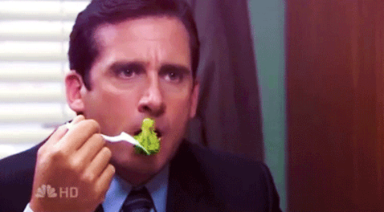
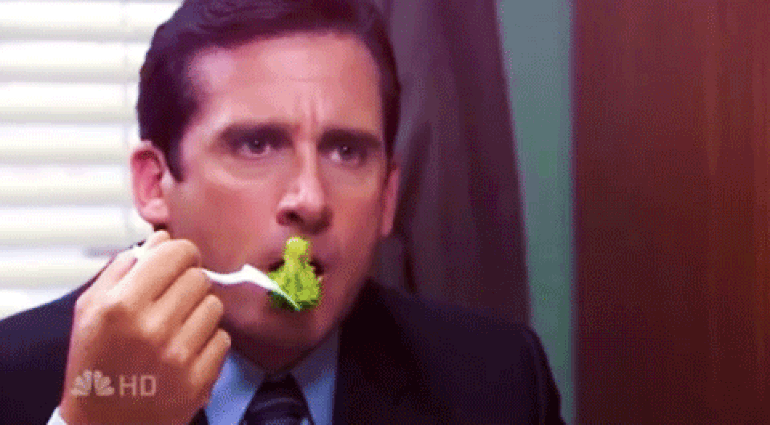

Being active is important for everyone regardless of age or current fitness level. It can make your daily life better by-
- Improving mood, focus, and sleep
- Helping you feel more energized, calm, and confident
- Making it easier to do everyday activities, like carrying groceries and playing with kids
Focus on moving more and sitting less throughout the day. Always remember some activity is better than none. Check with your doctor before starting a physical activity routine. Adults (18-64 years) need a mix of physical activity to stay healthy. You can aim for these recommendations, but be as active as you are able:
- At least 150 minutes a week of moderate intensity activity such as brisk walking
- Or 75 minutes a week of vigorous intensity activity such as jogging or running
- Or a mix of moderate- and vigorous-intensity aerobic activity a week
 
